城市攻略
广州 · 沙面
·
早茶 + 半日步行
沙面早茶攻略：8:30 开门，窗边只有 5 张桌，六样点心 100 出头
一位广州阿姨和一位老街坊，用 33 分钟走完沙面：从地铁出口走到胜利宾馆，喝完茶再绕岛一圈。这篇把它们口述的价钱、时间、坐哪张桌、点什么，整理成可以直接照着做的一步步。
素材：YouTube 视频 《尋味廣州沙面》（频道「漫品」）
时长 33:41
发布 2026-11-13
播放 2.8 万
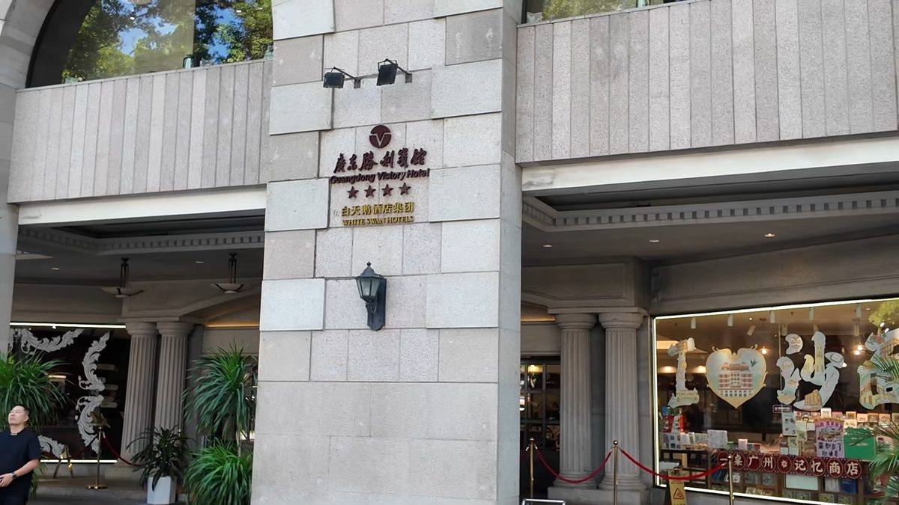
广东省广州市荔湾区沙面北街 53 号。门楣上是「广东胜利宾馆」，喝茶的「西關粵食」在楼上。视频截帧 00:05:00
0先看结论：这趟值不值得去
约 130 元
两人喝一顿（视频里六样点心「一百来块」）
3–4 小时
喝茶 1.5 小时 + 环岛步行 2 小时
它适合这样一类人：不追求「人均三千的顶配早茶」，也不想在网红店排队两小时，只想在一个有树荫、有河风、能坐很久不被赶的地方，把一顿早茶吃成半天的慢节奏。00:21:58
不适合你的情况，先排除掉
- 想图便宜。视频里说得很直白：沙面喝茶整体不便宜，「胜利宾馆的价钱一向不是它的优势」00:09:40。它的卖点是位置、环境、能坐。
- 人多。窗边全是小方桌，两个人刚好，三个人就挤了00:08:46。
- 想睡到自然醒再来。8:30 开门，好位置按分钟计算00:07:01。
1怎么去：地铁 F 出口，走 5 分钟上岛
视频给的是最省事的一条：坐地铁 1 号线或 6 号线，出闸后沿 F 出口 方向走，过桥就是沙面00:01:00。
F 出口 → 过桥一过桥，建筑就变了：英法租界留下的西洋楼，外墙大多翻新过，但结构还是原来的00:02:18。
沙基涌桥下这条涌，以前停满艇仔，艇仔粥就在船上卖。现在装了护栏，没有艇仔了00:02:57。
西桥 → 胜利宾馆过西桥基本就到了，门口的招牌写「广东胜利宾馆」00:03:51。
路上别急着走完。视频里有句话挺关键：沙面整条路都是树，热天进来「温度能降几度」00:02:57——这也是为什么这里的早茶值得配一段散步，而不是吃完就走。
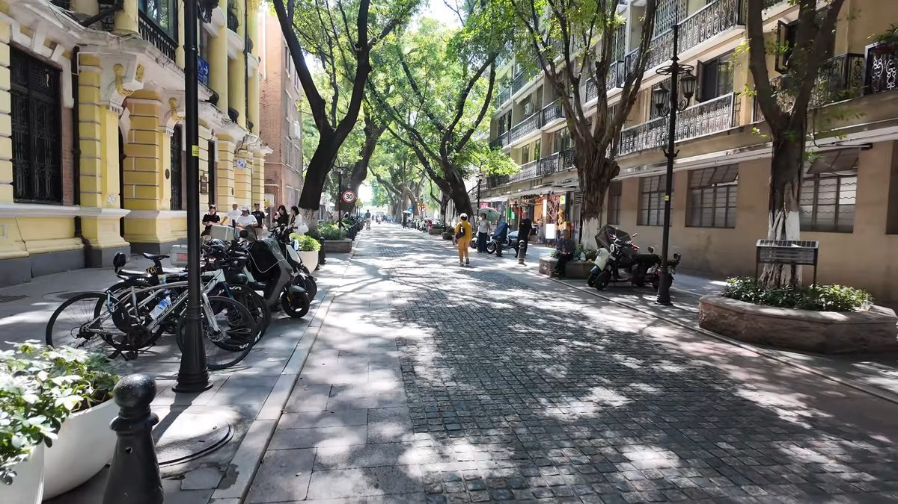
岛内就是这样：路窄、树高、两侧全是租界时期的老楼，走五分钟就到。视频截帧 00:23:50
2几点到：8:30 开门，窗边只有 5 张桌
这是整篇攻略里最该记住的一条。胜利宾馆的早茶 8:30 开始，是国家五钻酒家；门一开，老客直接上楼抢位00:07:01。
| 座位 | 实际体验（视频原话整理） |
|---|
| 临河窗边 | 一共 5 张桌。最好的是 65 号桌：正对沙基涌，能看到水面波光、对岸钓鱼的老人00:07:39。 |
| 窗边的代价 | 桌子是小方桌，两人刚好；出太阳时很晒，「热天不行」00:08:46。 |
| 常客的选择 | 「很多常来喝茶的不会喜欢坐这里」——图清静、想拍照拍视频的才抢这个位00:09:11。 |
照做就行
- 8:20 到门口，别 8:30 才到。
- 开门直接上二楼，先看桌号，能坐 65 号就坐 65 号。
- 坐下先点一壶普洱——视频里说早上喝普洱「特别舒服」00:08:26。
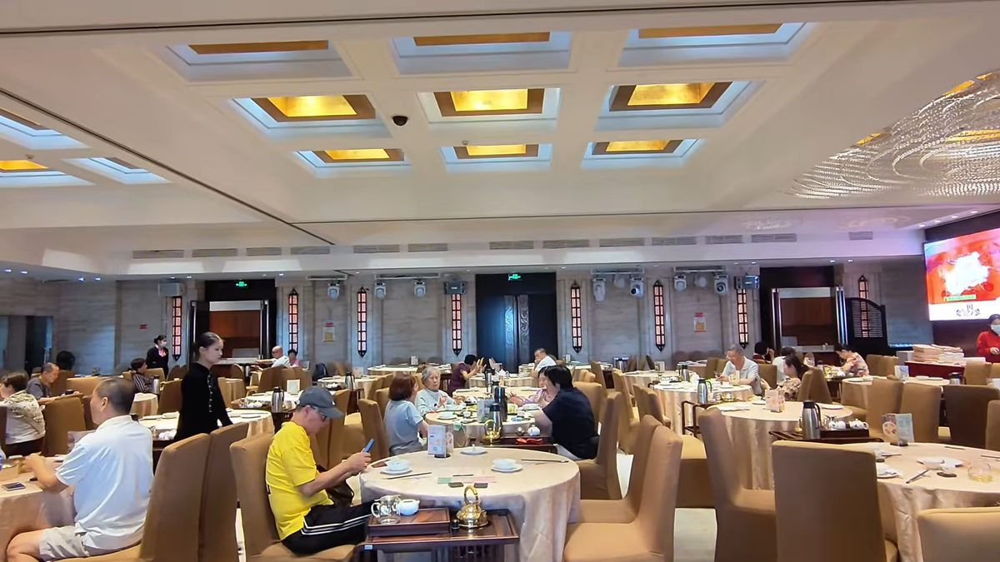
大厅的样子：圆桌为主，靠窗那排是小方桌。开市后人会很快坐满。视频截帧 00:07:50
3怎么点最划算：一个 158 套餐压住全场
先把价目结构搞清楚，再决定点什么。这家是点心分五档：最便宜 19 元，最贵的「经典」39 元；茶位 15 元起，节假日加收 13% 服务费00:11:13。
| 项目 | 价格 | 说明 |
|---|
| 每日特价点心 | 16.8 元 | 每天一款，视频里认为「挺划算」00:11:45 |
| 平台套餐 | 158 元 | 四款点心 + 一菜 + 一粥 + 两个茶位；两人吃刚好，吃不完打包00:12:13 |
| 烧鹅 | 88 元 / 份 | 单点菜里的参考价00:12:13 |
| 茶位 | 15 元 / 位起 | 节假日另加 13% 服务费00:11:13 |
| 住宿（顺带一提） | 466 元 / 晚起 | 两晚 828 元。视频里另提「5000 块那个房间就有窗」，这个数字口径不清，未作为依据00:06:03 |
一个能省一半的决定
视频里两个人最后买的是套餐，不是单点。理由很实在：点心多一款、还多一菜一粥和两个茶位，价格比单点低。他们原话是「我觉得这个划算一些」00:12:13。
注意：套餐里粥和青菜是固定的（石螺芋头粥 + 生菜），想换要现场问。
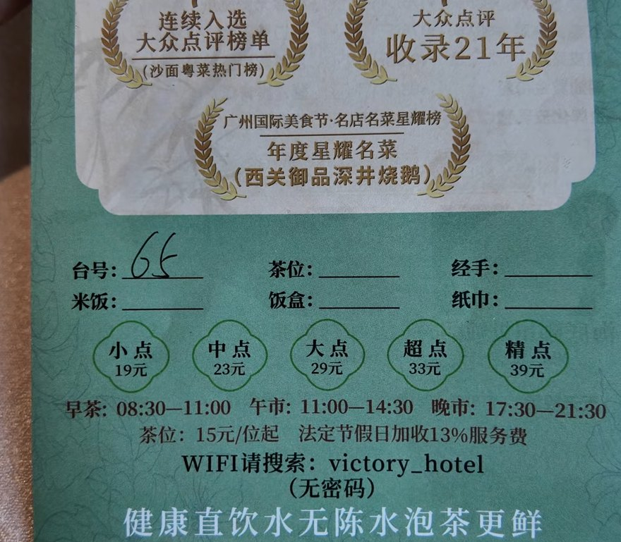
这张卡就是价目表。台号写着 65——正是靠窗那张；五档价：小点 19 / 中点 23 / 大点 29 / 超点 33 / 精点 39；茶位 15 元/位起，法定节假日另加 13%。视频截帧 00:11:40
4吃什么：四样点心 + 一粥一菜
套餐里的六样，视频里逐样点评过。下面按「该不该点」排序：
① 煎萝卜糕 —— 最值得
两面煎到金黄、不松散，里面能吃到虾米、腊肉粒、萝卜粒；「料都算可以的」，不黏牙。蘸辣酱吃，那辣酱不太辣00:14:14。
② 紫金酱蒸凤爪 —— 广式标配
紫金酱带一点辣，「蒸凤爪一般都用紫金酱，这样才够惹味」；这家蒸得够透、蒜味足00:20:53。
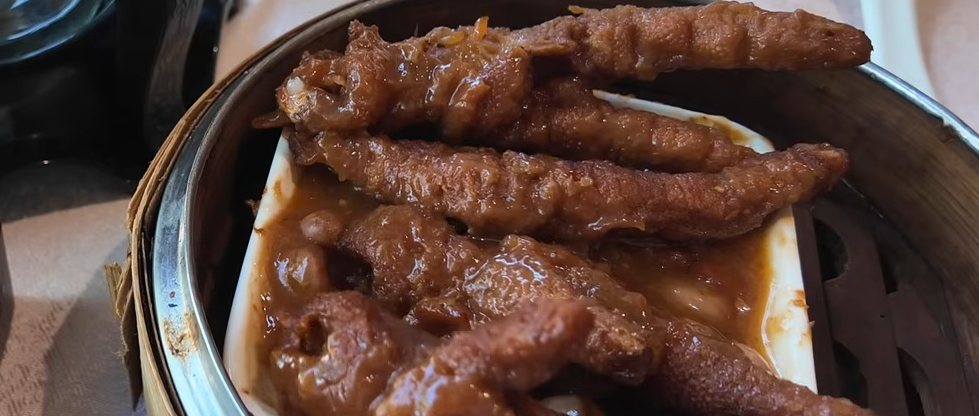
凤爪的样子：皮皱、酱色深。上桌时连蒸笼一起端，趁热吃。视频截帧 00:21:00
③ 蒸排骨 —— 肉多，垫芋头
不是「全是骨头」那种，底下垫的芋头先走过油，蒜香明显、不费牙00:19:29。视频里有句话可以当点单口诀：广州人喝茶，排骨和烧卖是标配00:19:55。
④ 酥皮蛋挞 —— 好吃但偏甜
一碟三只、个头不大，传统酥皮，层层分明、够松化，蛋浆不散、牛油味香；唯一的缺点是「稍微甜了一点点」00:17:07。
⑤ 石螺芋头粥 —— 这家的稀罕物
套餐里固定含。有芋头粒、螺肉粒、花生、姜丝。两位主持人的判断是：广州现在艇仔粥到处有，石螺粥很少见，「不是到处都有得吃」，而且这碗比他们之前在龙渡尾吃的「更正宗」，接近小时候的味道00:18:37。
⑥ 生菜
套餐固定搭配，作用是解腻，不用特别期待00:14:14。
「其实在这里喝茶真的可以坐半天，很舒服，它又不赶你走。」00:21:58
5喝茶之前或之后，顺手看一眼楼里的博物馆
胜利宾馆这栋楼本身就是景点，很多人喝完茶就走，其实漏了：
- 前身是 1865 年英国人建的沙面酒店，1895 年改名维多利亚酒店，现在这栋是 1993 年重建的样子；「维多利亚」的英文就是「胜利」，现在的名字是这么来的00:04:16。
- 楼里有个不小的博物馆：船用航行灯、煤油灯、木壳收音机，还有汇丰银行旧址的阳台柱；第 45 届世界锦标赛的选手曾下榻这里00:05:18。
- 大堂那口英式挂钟，视频里的说法是「没有 100 年也有几十年」00:05:18。
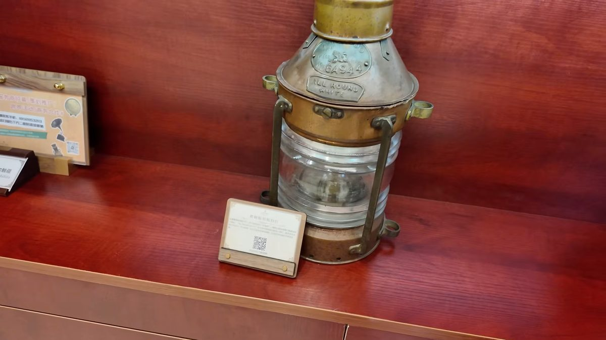
博物馆里的船用航行灯／煤油灯，是这栋楼当年做酒店时留下的物件。视频截帧 00:05:40
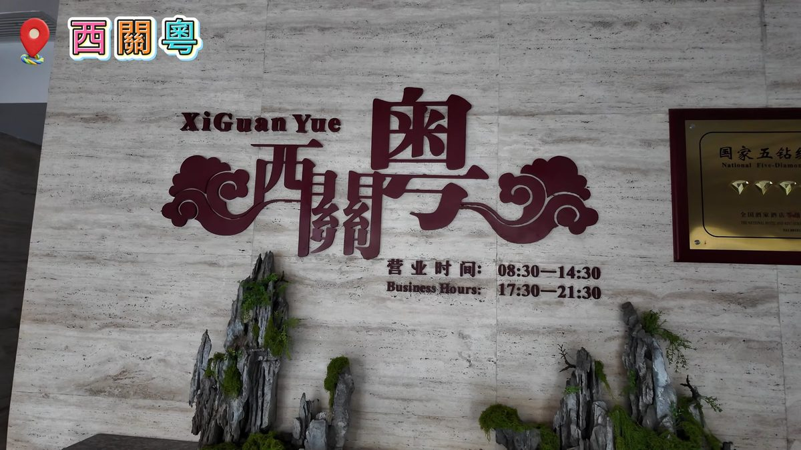
上到二层先看到这块招牌，「西關粵食」是餐厅名，下面写着营业时间与订座电话。视频截帧 00:07:01
6吃完怎么逛：一条不走回头路的环线
视频后半段是完整的散步路线，按顺序走就行。
① 沙面游泳场（1887 年）就在胜利宾馆隔壁。广州四个老泳场里最早的一个（另三个是海国红楼、珠江泳场、西郊泳场）。顶棚写着 1887；恒温池，视频说票价 20 元，冬夏开放时间不同00:22:50。
② 白天鹅宾馆 · 故乡水中国第一座五星级酒店。大堂瀑布「故乡水」是打卡点，旁边有霍英东的题词「别来此处最萦牵」。视频里顺口提了句顶配价：一根油条 55 元00:24:53。
③ 沙面公园 · 黄萧养石纪念农民起义领袖黄萧养的石刻；公园里的大榕树，视频里数到一棵 235 年00:27:21。
④ 沙面网球场（1877 年）原英租界皇后公园，最早是草地网球会，旁边还有乒乓球台供市民用00:28:41。
⑤ 江边两门古炮乾隆年间铸造、用来守护白鹅潭，后来租界时期被拆、推下海00:30:26。
⑥ 绿瓦亭旧址（已拆）旧羊城八景「鹅潭夜月」就在这一带，从白鹅潭伸出一条长码头，亭子后来拆了；视频说政府有意重建，但具体位置连本地人也说不准00:17:35。
⑦ 六二三路 · 沙基惨案纪念碑沙面与六二三路的历史绕不开沙基惨案，纪念碑就在这一带00:06:03。
⑧ 东桥一带的老建筑红砖的粤海海关俱乐部旧址（1907 年）、路德圣母堂、法租界时期的巡捕房（白楼）00:32:17。
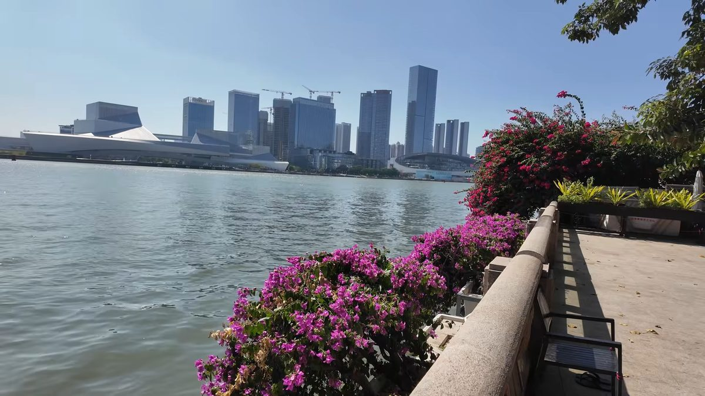
环线走到南岸就是这样：江面开阔，对岸是珠江新城。这一带适合停下来歇脚。视频截帧 00:28:40
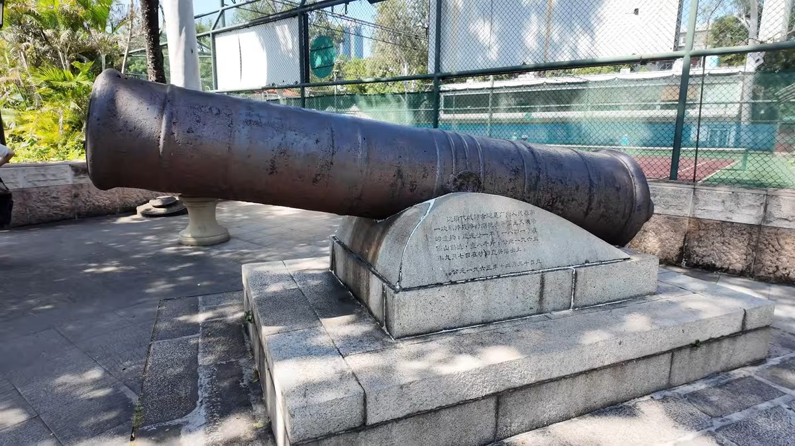
江边这两门古炮是乾隆年间铸造的，原本用来守白鹅潭。视频截帧 00:30:30
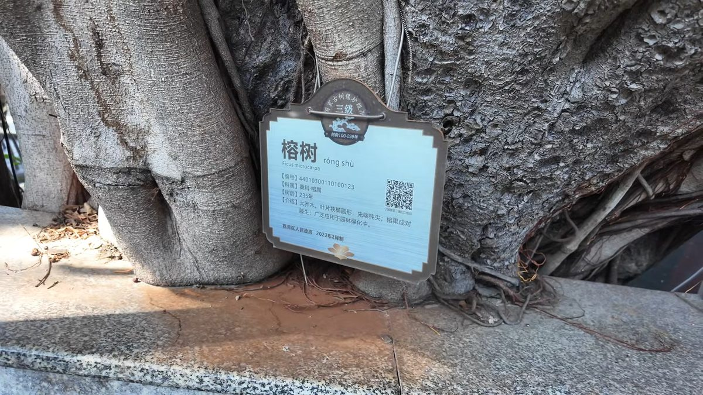
公园里的大榕树挂着科普牌，视频里读到其中一棵是 235 年树龄。视频截帧 00:32:06
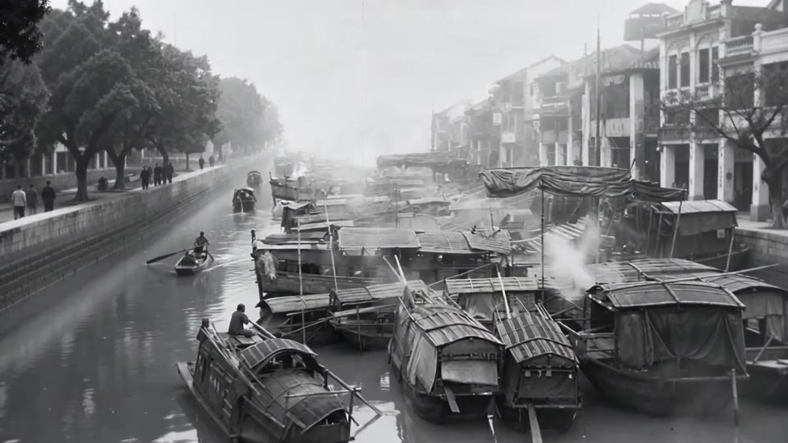
片子里插播的老照片：当年沙基涌停满艇仔，艇仔粥就是在船上卖的。视频截帧 00:19:30
7五个避坑点，都是视频里吃出来的
| 坑 | 怎么避 |
|---|
| 节假日多收 13% 服务费 | 能平日去就平日去，两人一顿差十几块00:11:13 |
| 窗边晒 | 晴天的午市别坐窗边，早茶时段太阳角度低，相对好些00:08:46 |
| 桌子太小 | 三人以上别指望窗边，直接要里面的桌00:08:46 |
| 以为沙面喝茶便宜 | 整条沙面的茶楼都不便宜，贵的理由是环境和能久坐，不是菜价00:10:08 |
| 想游泳没带泳裤 | 泳场在隔壁，20 元就能进，但得自己带装备00:23:21 |
8有个说法，得说清楚
「华人与狗不得入内」的牌子，沙面到底有没有？
视频里两位主持人专门聊到这件事，结论是没有找到实物证据：「我看过一些资料，我又找不到」00:15:27。
他们引用的可查线索是另一处：这个说法更常与上海租界的黄浦公园联系在一起；周作人 1903 年的日记里记的是「犬与华人不准入内」00:15:27。电影《精武门》里陈真被印度巡捕拦在公园门口的情节，也是上海。
所以这篇不给结论。沙面作为英法租界，歧视是时代事实；但「那块牌子就钉在沙面某处」这句话，目前没有可核实的证据。
9一页速查
- 交通：地铁 1 / 6 号线，F 出口，过桥进岛
- 时间：8:20 到门口，8:30 开门上楼；喝茶留 1.5 小时，环岛再留 2 小时
- 座位：窗边 5 张，65 号桌最好；两人为限
- 点单：158 元套餐（四点心 + 一菜 + 一粥 + 两茶位），加一款 16.8 元特价点心
- 必吃：煎萝卜糕、紫金酱凤爪、蒸排骨、酥皮蛋挞、石螺芋头粥
- 避坑：节假日 +13%、窗边晒、桌子小、别指望便宜
- 顺路：楼内博物馆 → 沙面泳场 → 白天鹅故乡水 → 沙面公园 → 网球场 → 江边古炮 → 东桥老建筑